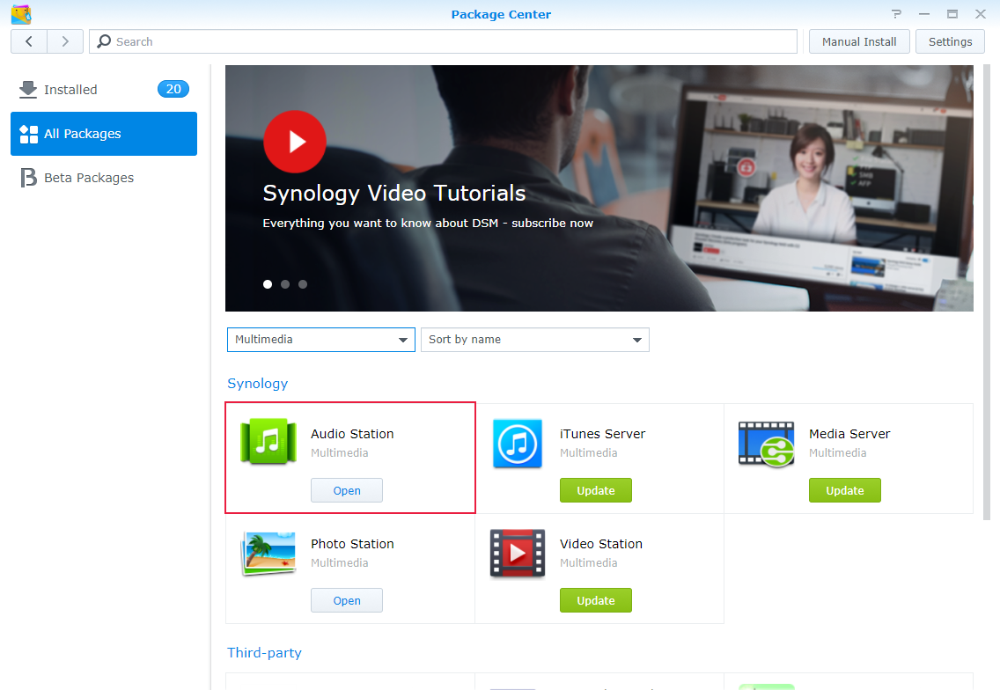
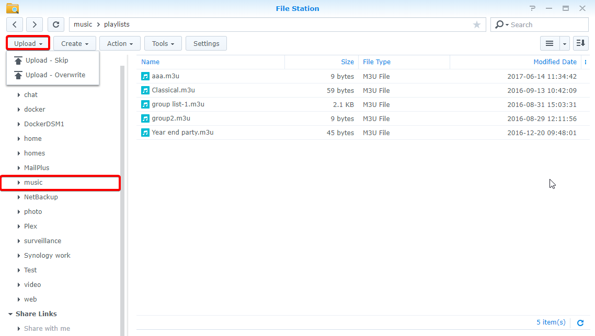
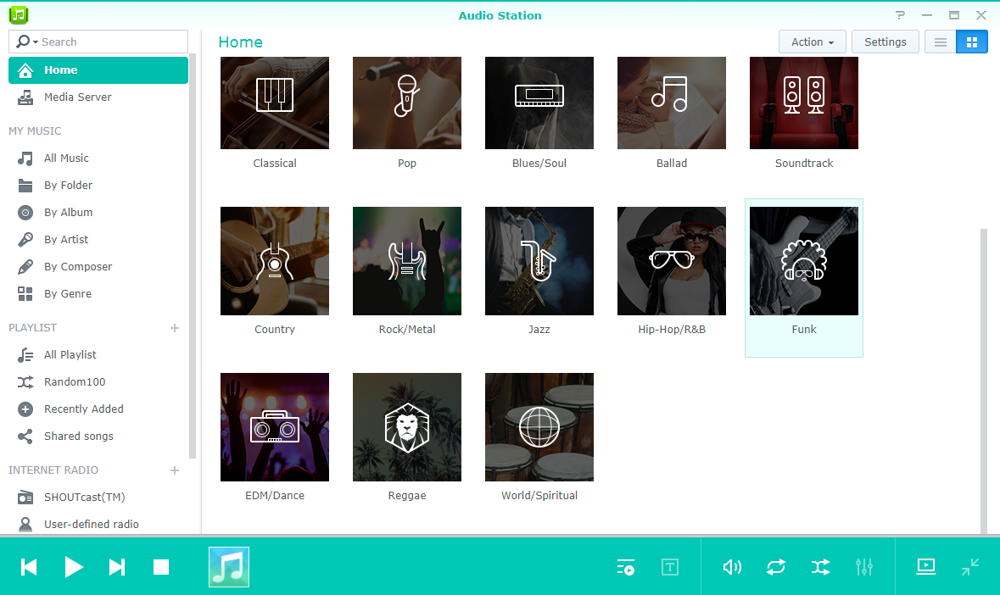
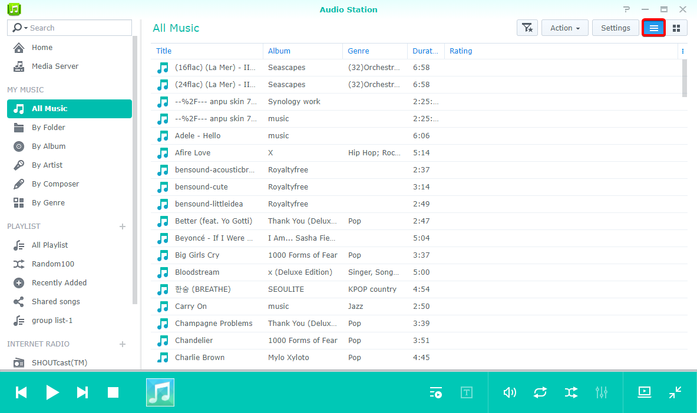
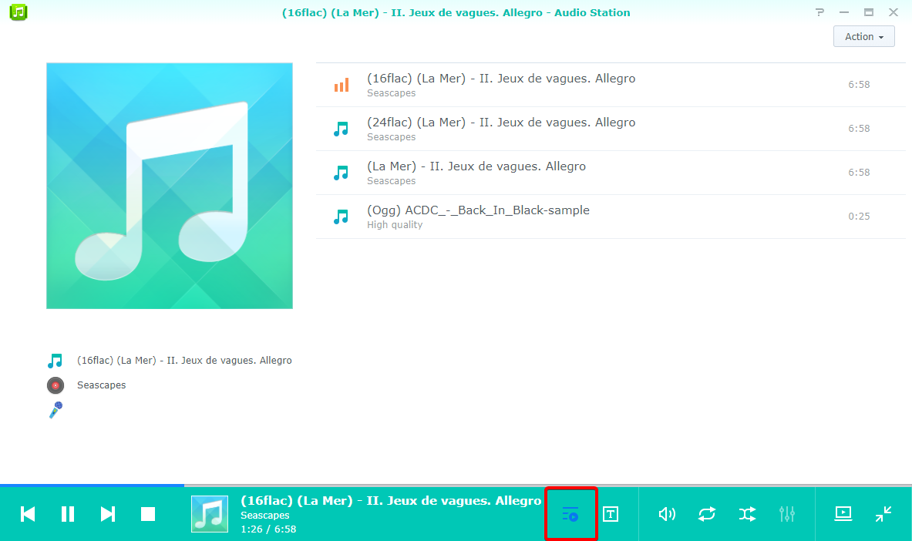
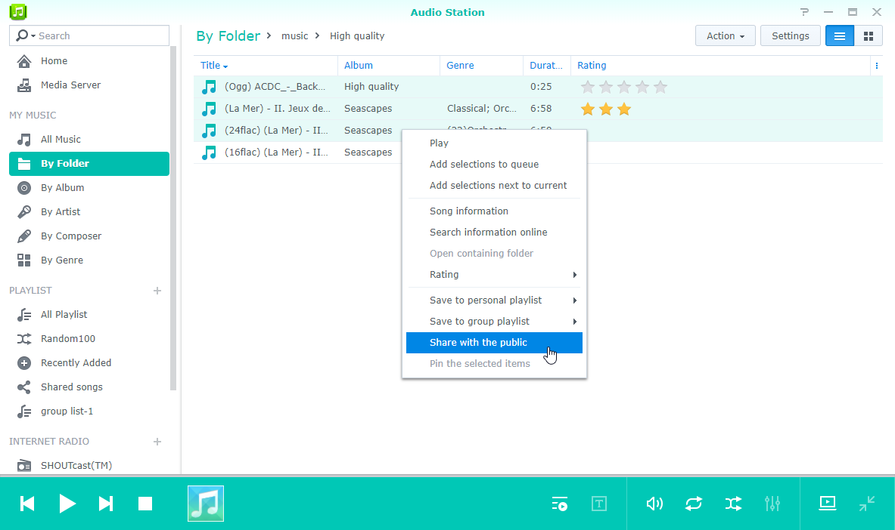
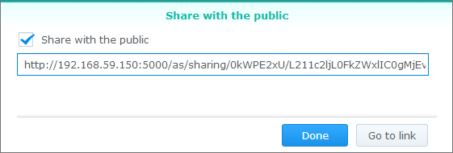
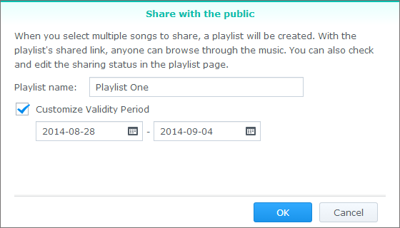
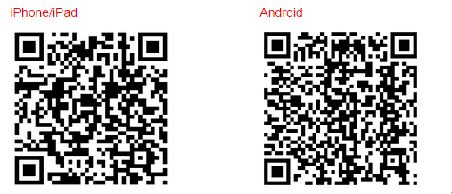

Panoramica
Con Audio Station, è possibile organizzare, ricerca e riprodurre la musica archiviata in Synology NAS su Internet. Audio Station supporta anche un'ampia selezione di tipologie di file, in modo da poter ascoltare la musica in qualsiasi formato si desideri. È possibile anche scaricare DS audio, un'applicazione mobile che completa Audio Station, consentendo di accedere alla musica su Synology NAS quando si è in viaggio.
1. Installazione di Audio Station
- Andare su Centro pacchetti e individuare Audio Station. Fare clic su Installa. 
2. Archiviare file audio nella cartella musica
- Andare su File Station > music e fare clic su Carica. 
- Selezionare i file da caricare nella cartella music dal computer locale.
3. Scorrere la musica
Dopo avere caricato i file musicali, sarà possibile riprodurre e scorrere la musica su Audio Station. Per accedere e scorrere i file musicali quando non si è nella rete locale, si consiglia di abilitare QuickConnect su Pannello di controllo > QuickConnect. Se non si dispone di un account Synology, è possibile configurarne uno in pochi minuti e assegnare a DiskStation un QuickConnect ID. Con questa opzione abilitata, sarà possibile accedere in DSM e accedere alla musica da qualsiasi posizione. È possibile usare anche QuickConnect ID per accedere a DS audio ed evitare di memorizzare il proprio indirizzo IP.
3.1 La mia musica
La mia musica nel pannello sinistro contiene la musica della cartella condivisa music o di altre cartelle indicizzate in Synology NAS. Nella sezione La mia musica, la musica è ordinata in categorie in modo da fornire differenti opzioni per ricercare facilmente la musica in base alle esigenze e le preferenze, come Per cartella, Per album o Per artista. È anche possibile contrassegnare le raccolte musicali preferite su Home e visualizzare i brani classificati per generi musicali in Genere consigliato. Per ricercare un brano, fare clic su ciascuna categoria in cui ricercare oppure selezionare la categoria desiderata tramite il menu a discesa nella barra di ricerca.
3.2. Visualizzare le modalità
Le icone nell'angolo in alto a destra di Audio Station consentono di passare tra differenti modalità di visualizzazione in cui è possibile scorrere il catalogo musicale.
- Vista elenco consente di visualizzare la musica come elenco, visualizzando il nome della canzone, dell'artista, dell'album, la durata del brano, il numero di traccia e la classificazione. 
- Grafica visualizza il nome della traccia, il nome dell'album e l'immagine dell'album.
- Coda di riproduzione visualizza la coda di riproduzione in schermo intero con le copertine degli album e i titoli delle canzoni o testi. 

4. Condivisione pubblica
La funzione di condivisione pubblica di Audio Station consente di condividere brani con il pubblico tramite un link da inviare a persone esterne alla propria rete o che non usano Synology NAS. Dopo avere ricevuto il collegamento, potranno ascoltare i brani.
4.1. Condivisione dei brani con il pubblico
- Fare clic con il tasto destro sul brano da condividere e selezionare Condividi con il pubblico. 
- Quando si condividono dei brani con il pubblico, sono disponibili due opzioni:
- Se si seleziona un singolo brano da condividere, nella finestra di dialogo che appare, selezionare la casella accanto a Condividi con il pubblico per abilitare il link di condivisione. 
- Se si selezionano più brani da condividere, verrà creato un elenco di riproduzione. È possibile nominare l'elenco di riproduzione e utilizzare l'opzione per specificare un periodo di validità per il link selezionando la casella accanto Personalizza periodo di validità e facendo clic su OK. 
- Copiare il link e incollarlo alla persona con cui condividere l'elenco di riproduzione, o fare clic su Vai al link per visitare direttamente il link.
5. Organizzare e riprodurre musica su dispositivi mobili
DS audio funziona su dispositivi iPad/iPhone/iPod touch e Android. L'applicazione è disponibile gratuitamente dall'App Store di Apple e Google Play. È anche possibile scansionare il codice QR di seguito per effettuare il download immediato.
